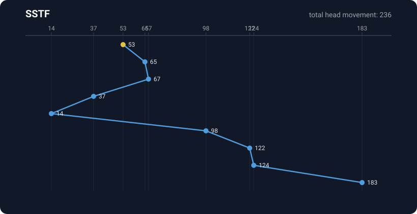
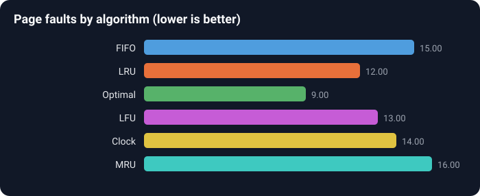
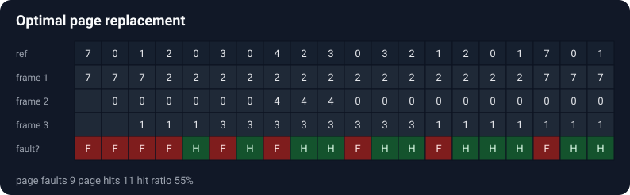
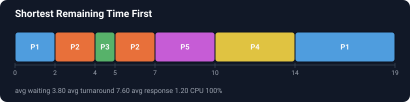

1. The big picture
A computer has one CPU but many programs that all want to run. Something has to decide who goes first, who waits, and for how long. That decision maker is called the scheduler, and the rules it uses are called scheduling algorithms. This project builds a small laboratory where you can try those rules, feed them your own inputs, and see exactly what happens.
The project covers three families of scheduling, because an operating systems course usually teaches all three:
- CPU scheduling: which program gets the processor next.
- Disk scheduling: the order to move the disk head so it travels the least.
- Page replacement: which page of memory to throw out when memory is full.
They look different, but they share a shape. In each one you have a set of requests, a rule for choosing what to do next, and some numbers that tell you how good the rule was. Once you see that shape, the whole project clicks into place.
2. The smallest piece: a process
The tiniest building block of the CPU side is a single process. In this project a process is just four numbers with a name, and it lives in a Java record, which is a short way to declare a small, unchangeable bundle of data.
public record CpuProcess(String id, int arrivalTime, int burstTime, int priority) { ... }| Field | Meaning |
|---|---|
id | A short label like P1 that shows up in the charts. |
arrivalTime | The moment the process shows up and starts waiting. |
burstTime | How much CPU time the process needs to finish. |
priority | How important it is. A smaller number means more important. |
If you can explain those four fields and why the data is unchangeable, you already understand the foundation everything else is built on.
3. What we measure
After a scheduler decides the order, we score it with four numbers per process. Every one of them comes straight from a plain definition, so there is nothing to memorise once you see the picture.
| Number | Plain definition |
|---|---|
| Completion time | The clock reading when the process finished. |
| Turnaround time | Completion time minus arrival time. The total time in the system. |
| Waiting time | Turnaround time minus burst time. Time spent waiting rather than running. |
| Response time | The first moment it got the CPU, minus arrival time. |
The app also reports a few whole run numbers: average waiting time, average turnaround time, CPU utilisation (how much of the time the CPU was busy) and throughput (processes finished per unit of time). Lower waiting times are better, and higher utilisation is better.
4. A worked example by hand
Let us schedule three processes with the simplest rule, First Come First Serve, entirely on paper. This is the example the automated tests also check, so the numbers here are the real numbers the code produces.
| Process | Arrival | Burst |
|---|---|---|
| P1 | 0 | 5 |
| P2 | 1 | 3 |
| P3 | 2 | 1 |
First come first serve runs them in arrival order, each to completion:
time: 0 5 8 9
| P1 | P2 |P3 |
- P1 runs from 0 to 5. Completion 5. It arrived at 0, so waiting time is 0.
- P2 runs from 5 to 8. Completion 8. It arrived at 1, so it waited 5 - 1 = 4.
- P3 runs from 8 to 9. Completion 9. It arrived at 2, so it waited 8 - 2 = 6.
Average waiting time is (0 + 4 + 6) / 3, which is about 3.33. If you run java -jar target/os-scheduler-studio.jar cpu fcfs --processes "P1,0,5; P2,1,3; P3,2,1" you get exactly this. Being able to do one example by hand and match the program is the single best way to prove to yourself, and to anyone asking, that you understand it.
5. The one idea that keeps it clean
There are 21 algorithms in this project. Without a plan, that would be 21 tangled special cases. The plan is a single small contract that every CPU algorithm agrees to:
public interface CpuScheduler {
String name();
ScheduleResult schedule(List<CpuProcess> processes);
}An interface is a promise. Any class that says it is a CpuScheduler promises to have a name and to turn a list of processes into a result. It does not say how. Round Robin and Shortest Job First keep that promise in completely different ways, but from the outside they look identical.
schedule(processes).
ScheduleResult, the chart drawing code, the command line tool and the desktop app were written once and work for every algorithm, present and future. Add a new algorithm and the whole app supports it with no extra wiring. This is the difference between code that impresses and code that just works.
6. Building the CPU algorithms
The nine CPU algorithms fall into three groups, and the code follows that grouping exactly.
Group one: run to completion (non preemptive)
FCFS, Shortest Job First, Longest Job First, Highest Response Ratio Next and non preemptive priority all work the same way. When the CPU is free they look at everything that has arrived, pick one, and let it run all the way to the end. The only difference between them is which one they pick. So they all share one base class and only fill in a single method:
protected abstract CpuProcess select(List<CpuProcess> ready, int currentTime);| Algorithm | Its one rule for picking |
|---|---|
| FCFS | the one that arrived first |
| Shortest Job First | the smallest burst time |
| Longest Job First | the largest burst time |
| Highest Response Ratio Next | the highest (waiting + burst) / burst |
| Priority | the smallest priority number |
Group two: check every tick (preemptive)
Shortest Remaining Time First, Longest Remaining Time First and preemptive priority can interrupt a running process. They advance the clock one unit at a time. At every single tick they look again and run the best process for just one unit. If something better arrives, the next tick switches to it. Again the only difference is the picking rule, so they share a base class with one method.
Group three: Round Robin, the special case
Round Robin does not pick a "best" process. It gives everyone a fair turn of fixed length, called the time quantum, and rotates through a queue. Because it cares about queue order rather than a best choice, it has its own implementation.
All nine CPU algorithms in plain words
Here is every CPU algorithm the app offers, each in one plain sentence, with the trap to watch for. This is the cheat sheet to keep in your head.
| Algorithm | What it does | Watch out for |
|---|---|---|
| FCFS First Come First Serve | Runs jobs in the order they arrived, each all the way to the end. | One long job at the front makes everyone behind it wait. This is called the convoy effect. |
| SJF Shortest Job First | When the CPU is free it runs the shortest waiting job. This gives the lowest average waiting time. | A steady stream of short jobs can leave a long job waiting forever (starvation), and it needs to know burst times up front. |
| SRTF Shortest Remaining Time First | The preemptive SJF. If a job arrives that is shorter than what is left of the running one, it switches to it. | Even lower waiting times, but lots of switching, and long jobs can still starve. |
| LJF Longest Job First | Runs the longest waiting job first. | Mostly a teaching contrast. It produces poor waiting times. |
| LRTF Longest Remaining Time First | The preemptive LJF, checked every tick. | Also mainly a contrast. Long waiting times and a lot of switching. |
| HRRN Highest Response Ratio Next | Picks by a ratio that climbs the longer a job waits, so short jobs are favoured but nothing waits forever. | A fairer SJF, but still non preemptive and still needs burst times. |
| Priority non-preemptive | Runs the most important job (smallest priority number) to completion. | Low priority jobs can starve if important jobs keep arriving. |
| Priority preemptive | Same, but a more important job that arrives interrupts a less important one. | Same starvation risk, plus the cost of switching. |
| Round Robin | Everyone gets a fixed time slice (the quantum) in turn, round and round the queue. | Too small a quantum wastes time switching; too large a quantum turns it back into FCFS. |
7. Disk scheduling
A hard disk stores data in circular tracks called cylinders. A single head moves in and out to reach them, and moving the head takes time. Disk scheduling is about servicing a batch of requests while moving the head as little as possible.
The six algorithms differ in how they choose the head's path. FCFS serves requests in order. SSTF always jumps to the nearest one. SCAN, C-SCAN, LOOK and C-LOOK all sweep across the disk, differing in whether they walk to the very edge and whether they jump back or reverse.

The score for a disk run is the total head movement, and less is better. A satisfying check is that the code reproduces the standard textbook example exactly: starting at cylinder 53 with the queue 98, 183, 37, 122, 14, 124, 65, 67, FCFS moves 640 cylinders and SSTF moves only 236.
All six disk algorithms in plain words
| Algorithm | What it does | Watch out for |
|---|---|---|
| FCFS | Serves requests in the exact order they were asked. | Fair, but the head can bounce back and forth across the whole disk. |
| SSTF Shortest Seek Time First | Always jumps to the nearest pending request. | Far away requests can be left waiting for a long time (starvation). |
| SCAN the elevator | Sweeps in one direction to the end of the disk servicing on the way, then reverses. | The far edge of the disk waits the longest between visits. |
| C-SCAN | Sweeps one way to the end, jumps straight back to the start, and sweeps the same way again. | The return jump is extra movement, but waiting times are more even than SCAN. |
| LOOK | Like SCAN, but turns around at the last request instead of driving to the disk edge. | Saves the wasted trips to the ends. Little to watch for; usually better than SCAN. |
| C-LOOK | Like C-SCAN, but wraps at the last request rather than the disk edge. | The efficient and fair choice in practice. |
8. Page replacement
Programs use more memory than physically fits, so memory is split into slots called frames and the rest lives on disk. When a program needs a page that is not in a frame, that is a page fault, and the operating system must load it, possibly throwing out another page first. Page replacement is the rule for choosing the victim.
The six algorithms are FIFO, LRU, Optimal, LFU, Clock and MRU. Optimal is special: it looks into the future of the reference string and always makes the best possible choice, so it gives the fewest faults any algorithm ever could. It cannot be used in a real system because you do not know the future, but as a simulation over a known list it is the yardstick everything else is measured against.


All six page algorithms in plain words
| Algorithm | What it does | Watch out for |
|---|---|---|
| FIFO First In First Out | Throws out whichever page has been in memory the longest. | Simple, but it can suffer Belady's anomaly, where adding more frames causes more faults. |
| LRU Least Recently Used | Throws out the page that has gone unused the longest. | Usually close to optimal and never has Belady's anomaly, but it costs a little to track usage. |
| Optimal | Throws out the page that will not be needed for the longest time in the future. | The fewest faults possible, but impossible in reality because it needs to see the future. Used only as a benchmark. |
| LFU Least Frequently Used | Throws out the page referenced the fewest times. | Good when popularity is stable, but a page popular early can linger long after it stops being used. |
| Clock Second Chance | A cheap approximation of LRU using a reference bit and a moving hand. | What real operating systems actually use. Only approximate, but fast. |
| MRU Most Recently Used | Throws out the page used most recently. | Sounds backwards, but wins for looping scans over a large data set. Bad for the usual "used recently, needed again soon" pattern. |
9. Turning results into pictures
A table of numbers is correct but hard to feel. A Gantt chart is instant to read. The project turns every result into a picture in two ways that share the same layout code.
- On the desktop, results are drawn on a JavaFX canvas so you can see them immediately.
- For reports and this document, results are written out as SVG image files. SVG is just text describing shapes, so the program builds the image by writing lines like
<rect .../>. That means the charts in the README are produced by the program itself, not drawn by hand.

10. Two front ends, one core
The project has two ways to use it, and they both sit on top of the same core package.
- A desktop app built with JavaFX, with three tabs, editable tables, live charts and a compare mode.
- A command line tool that prints text tables and can export images, handy for scripts and reports.
Here is the whole flow in one picture. Everything to the right of the scheduler is shared, which is the payoff of the interface idea from section 5.
11. Challenges and fixes
This is the section that turns a good explanation into a great one. Real projects have real problems. Here are the ones that came up and how each was solved. Being able to tell one of these stories shows you actually understand the work.
min and max, which keep the first item on a tie. So ties always break the same way, and the results are repeatable.
null, which is clearly different from the value 0.
Launcher class starts the app, which is the reliable pattern, and the desktop app is run with mvn javafx:run.
12. How to explain it out loud
Here is a 30 second summary you can say from memory, followed by answers to the questions people usually ask.
Q: Why did you use an interface for the algorithms?
So the rest of the app never needs special cases. Everything returns the same result type, which means the charts, the command line and the app were written once and work for all 21 algorithms.
Q: What is the difference between preemptive and non preemptive?
Non preemptive lets a process run to completion once it starts. Preemptive can interrupt it if something better comes along. Shortest Job First is non preemptive; its preemptive twin is Shortest Remaining Time First.
Q: Which CPU algorithm is best?
For the lowest average waiting time, Shortest Remaining Time First wins, but it can starve long jobs and it switches often. Round Robin is fairer and better for interactive use. There is no single winner, which is exactly why the app lets you compare them.
Q: Why is Optimal page replacement impossible in real life?
It needs to know which pages will be used in the future. A real system cannot see the future, so Optimal is only useful as a benchmark for how well the practical algorithms do.
Q: How do you know the results are correct?
The tests compare the output against values worked out by hand and against well known textbook examples, like the disk queue starting at cylinder 53 and the standard page reference string.
13. Glossary
| Term | Meaning |
|---|---|
| Process | A program that needs CPU time, described here by arrival, burst and priority. |
| Burst time | How long a process needs the CPU. |
| Preemptive | Able to interrupt a running process to switch to another. |
| Gantt chart | A timeline showing which process ran during each stretch of time. |
| Time quantum | The fixed slice of time each process gets under Round Robin. |
| Cylinder | A track on a disk that the head moves to reach. |
| Seek | Moving the disk head, which costs time. |
| Frame | A slot in memory that holds one page. |
| Page fault | A request for a page that is not currently in a frame. |
| Interface | A promise about what methods a class has, without saying how they work. |
Read this page once, run the worked example yourself, and try one algorithm in the app. After that you will be able to explain any part of the project to anyone who asks.